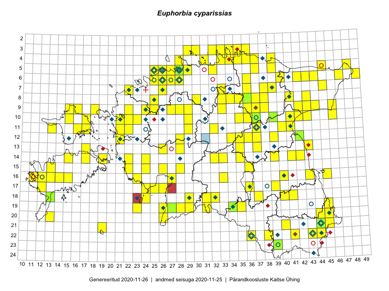

Euphorbia cyparissias — küpress-piimalill
Euphorbiaceae :: Euphorbia cyparissias L. (565); Euphorbia cypriani Sennen (1)

Kaart põhineb 584 kirjel:
vaatlusi 477
herbaareksemplare 89
PKÜ kirjeid1 2
ELFi kirjeid2 1
LVA kirjeid3 15
Taime kaasaegsed ja ajaloolised leiukohad asuvad 205 ruudus.
Tingmärgid ja leidudega ruutude arvud periooditi uues (u) ja 2005 andmestikus (v)
| █ | vahemik | u4 | v5 |
|---|---|---|---|
| █ | 2006–2020 | 176 | – |
| ◆/◇ | 1971–2005 | 55 | 55 |
| ○ | 1921–1970 | 20 | 12 |
| + | kuni 1920 | 2 | 1 |
| × | hävinud | – | 0 |
| ? | kaheldav | – | 0 |
| Ruut | Leidja(d) | Leiuaeg | Kirje |
|---|---|---|---|
| 13-17 | Mari Reitalu, Sirje Azarov | 2020-08-19 | ruut/ala: Euphorbia cyparissias L. |
| 21-44 | Gea Pulst | 2020-08-07 | TAA0153275: Euphorbia cyparissias L. |
| 06-28 | Toomas Kukk | 2020-07-12 | ruut/ala: Euphorbia cyparissias L. |
| 22-38 | Tiina Ploom | 2020-06-19 | punkt: Euphorbia cyparissias L. |
| 10-36 | Toomas Kukk | 2020-06-10 | punkt: Euphorbia cyparissias L. |
| 04-33 | Toomas Kukk, Meeli Mesipuu | 2020-06-09 | punkt: Euphorbia cyparissias L. |
| 16-40 | Triin Nõu | 2020-06-06 | punkt: Euphorbia cyparissias L. |
| 11-37 | Ulvi Selgis | 2020-05-06 | LVA: 176585620 |
| 16-13 | Mari Reitalu | 2019-09-30 | ruut/ala: Euphorbia cyparissias L. |
| 09-18 | Ott Luuk | 2019-09-17 | punkt: Euphorbia cyparissias L. |
| 03-36 | Ott Luuk, Meeli Mesipuu | 2019-09-09 | punkt: Euphorbia cyparissias L. |
| 05-26 | Peedu Saar, Ott Luuk | 2019-09-02 | punkt: Euphorbia cyparissias L. |
| 05-26 | Ott Luuk, Peedu Saar | 2019-09-02 | ruut/ala: Euphorbia cyparissias L. |
| 16-33 | Thea Kull, Mari Reitalu | 2019-08-27 | punkt: Euphorbia cyparissias L. |
| 16-33 | Mari Reitalu, Thea Kull | 2019-08-27 | ruut/ala: Euphorbia cyparissias L. |
| 20-44 | Ott Luuk, Tiit Hallikma | 2019-07-09 | punkt: Euphorbia cyparissias L. |
| 20-44 | Ott Luuk, Tiit Hallikma | 2019-07-09 | ruut/ala: Euphorbia cyparissias L. |
| 05-27 | Meeli Mesipuu | 2019-06-22 | ruut/ala: Euphorbia cyparissias L. |
| 14-39 | Thea Kull | 2019-06-17 | ruut/ala: Euphorbia cyparissias L. |
| 06-27 | Thea Kull | 2019-06-13 | punkt: Euphorbia cyparissias L. |
| 05-28 | Thea Kull | 2019-06-11 | TAA0148053: Euphorbia cyparissias L. |
| 10-37 | Ott Luuk, Peedu Saar | 2019-06-10 | TAA0150084: Euphorbia cyparissias L. |
| 15-26 | Indrek Tammekänd | 2019-06-05 | punkt: Euphorbia cyparissias L. |
| 05-29 | Ott Luuk | 2019-05-18 | punkt: Euphorbia cyparissias L. |
| 14-24 | Ott Luuk, Peedu Saar, Toomas Kukk | 2019-05-13 | ruut/ala: Euphorbia cyparissias L. |
| 05-48 | Peedu Saar, Toomas Kukk | 2018-09-04 | punkt: Euphorbia cyparissias L. |
| 09-38 | Toomas Kukk, Peedu Saar | 2018-09-03 | punkt: Euphorbia cyparissias L. |
| 21-44 | Toomas Kukk | 2018-06-24 | punkt: Euphorbia cyparissias L. |
| 21-44 | Toomas Kukk | 2018-06-24 | punkt: Euphorbia cyparissias L. |
| 06-28 | Leelo Rood | 2018-06-16 | punkt: Euphorbia cyparissias L. |
| 06-43 | Miina Krabbi | 2018-06-09 | LVA: -439709704 |
| 16-15 | Toomas Kukk, Ilmar Uibopuu | 2018-05-29 | punkt: Euphorbia cyparissias L. |
| 16-14 | Toomas Kukk, Ilmar Uibopuu, Mari Reitalu | 2018-05-28 | punkt: Euphorbia cyparissias L. |
| 10-37 | Ulvi Selgis | 2018-05-21 | LVA: 60455810 |
| 21-44 | Peedu Saar, Toomas Kukk | 2018-05-17 | punkt: Euphorbia cyparissias L. |
| 22-44 | Peedu Saar, Toomas Kukk | 2018-05-17 | punkt: Euphorbia cyparissias L. |
| 20-45 | Toomas Kukk, Peedu Saar | 2018-05-16 | punkt: Euphorbia cyparissias L. |
| 17-39 | Toomas Kukk, Ilmar Uibopuu | 2017-10-13 | punkt: Euphorbia cyparissias L. |
| 03-29 | Toomas Kukk | 2017-09-29 | punkt: Euphorbia cyparissias L. |
| 19-45 | Kersti Tambets | 2017-09-17 | punkt: Euphorbia cyparissias L. |
| 11-17 | Toomas Kukk, Indrek Tammekänd | 2017-09-11 | ruut/ala: Euphorbia cyparissias L. |
| 11-17 | Toomas Kukk, Indrek Tammekänd | 2017-09-11 | punkt: Euphorbia cyparissias L. |
| 17-26 | Toomas Kukk, Ott Luuk, Kersti Tambets, Timo Luhamäe, Sten Mander | 2017-08-30 | ruut/ala: Euphorbia cyparissias L. |
| 20-26 | Toomas Kukk, Ott Luuk, Kersti Tambets, Timo Luhamäe, Sten Mander | 2017-08-30 | punkt: Euphorbia cyparissias L. |
| 17-26 | Toomas Kukk, Ott Luuk, Kersti Tambets, Timo Luhamäe, Sten Mander | 2017-08-30 | punkt: Euphorbia cyparissias L. |
| 17-12 | Mari Reitalu, Triin Reitalu | 2017-08-15 | punkt: Euphorbia cyparissias L. |
| 15-28 | Timo Luhamäe, Peedu Saar | 2017-08-11 | punkt: Euphorbia cyparissias L. |
| 15-28 | Peedu Saar, Timo Luhamäe | 2017-08-11 | ruut/ala: Euphorbia cyparissias L. |
| 11-21 | Ott Luuk, Ilmar Uibopuu | 2017-08-10 | punkt: Euphorbia cyparissias L. |
| 11-21 | Ilmar Uibopuu, Ott Luuk | 2017-08-10 | ruut/ala: Euphorbia cyparissias L. |
| 09-29 | Toomas Kukk, Ilmar Uibopuu, Kadri Kuusksalu | 2017-08-09 | ruut/ala: Euphorbia cyparissias L. |
| 07-26 | Toomas Kukk, Ilmar Uibopuu, Kadri Kuusksalu | 2017-08-08 | punkt: Euphorbia cyparissias L. |
| 09-27 | Meeli Mesipuu, Indrek Tammekänd | 2017-08-08 | ruut/ala: Euphorbia cyparissias L. |
| 09-27 | Meeli Mesipuu, Indrek Tammekänd | 2017-08-08 | punkt: Euphorbia cyparissias L. |
| 09-27 | Meeli Mesipuu, Indrek Tammekänd | 2017-08-08 | punkt: Euphorbia cyparissias L. |
| 12-34 | Thea Kull, Ott Luuk | 2017-08-03 | punkt: Euphorbia cyparissias L. |
| 12-34 | Ott Luuk, Thea Kull | 2017-08-03 | ruut/ala: Euphorbia cyparissias L. |
| 07-22 | Toomas Kukk, Ilmar Uibopuu | 2017-07-29 | ruut/ala: Euphorbia cyparissias L. |
| 07-22 | Toomas Kukk, Ilmar Uibopuu | 2017-07-29 | punkt: Euphorbia cyparissias L. |
| 06-49 | Toomas Kukk | 2017-07-21 | punkt: Euphorbia cyparissias L. |
| 16-23 | Indrek Tammekänd, Eike Tammekänd | 2017-07-20 | ruut/ala: Euphorbia cyparissias L. |
| 08-38 | Peedu Saar, Ott Luuk | 2017-07-18 | punkt: Euphorbia cyparissias L. |
| 08-38 | Ott Luuk, Peedu Saar | 2017-07-18 | ruut/ala: Euphorbia cyparissias L. |
| 06-28 | Evelin Laanest, Ilmar Uibopuu | 2017-07-18 | LVA: 2005231318 |
| 21-44 | Meeli Mesipuu | 2017-07-17–2017-07-20 | ruut/ala: Euphorbia cyparissias L. |
| 18-24 | Mari Reitalu, Sirje Azarov, Ester Valdvee, Triin Reitalu | 2017-07-11–2017-07-13 | ruut/ala: Euphorbia cyparissias L. |
| 06-28 | Toomas Kukk | 2017-06-22 | punkt: Euphorbia cyparissias L. |
| 03-29 | Ulvi Selgis | 2017-06-14 | LVA: 1289410918 |
| 13-43 | Ott Luuk, Peedu Saar | 2017-05-18 | ruut/ala: Euphorbia cyparissias L. |
| 13-43 | Ott Luuk, Peedu Saar | 2017-05-18 | punkt: Euphorbia cyparissias L. |
| 15-13 | Toomas Kukk, Meeli Mesipuu, Mari Reitalu | 2016-10-06 | punkt: Euphorbia cyparissias L. |
| 15-13 | Meeli Mesipuu, Toomas Kukk, Mari Reitalu | 2016-10-06 | ruut/ala: Euphorbia cyparissias L. |
| 16-27 | Toomas Kukk, Meeli Mesipuu | 2016-10-05 | punkt: Euphorbia cyparissias L. |
| 18-24 | Peedu Saar, Ott Luuk | 2016-09-21 | ruut/ala: Euphorbia cyparissias L. |
| 18-24 | Ott Luuk, Peedu Saar | 2016-09-21 | punkt: Euphorbia cyparissias L. |
| 07-33 | Peedu Saar, Toomas Kukk | 2016-09-15 | punkt: Euphorbia cyparissias L. |
| 07-33 | Peedu Saar, Toomas Kukk | 2016-09-13 | ruut/ala: Euphorbia cyparissias L. |
| 21-19 | Ott Luuk, Meeli Mesipuu | 2016-09-10 | punkt: Euphorbia cyparissias L. |
| 21-19 | Meeli Mesipuu, Ott Luuk | 2016-09-10 | ruut/ala: Euphorbia cyparissias L. |
| 04-31 | Toomas Kukk, Sander Laherand | 2016-08-31 | punkt: Euphorbia cyparissias L. |
| 04-31 | Sander Laherand, Toomas Kukk | 2016-08-31 | ruut/ala: Euphorbia cyparissias L. |
| 10-46 | Meeli Mesipuu, Karin Kikas | 2016-08-31 | ruut/ala: Euphorbia cyparissias L. |
| 10-46 | Karin Kikas, Meeli Mesipuu | 2016-08-31 | punkt: Euphorbia cyparissias L. |
| 14-17 | Peedu Saar, Ott Luuk | 2016-08-29 | punkt: Euphorbia cyparissias L. |
| 14-17 | Ott Luuk, Peedu Saar | 2016-08-29 | ruut/ala: Euphorbia cyparissias L. |
| 08-36 | Ott Luuk, Kersti Tambets, Janika Sammasto, Ülle Jõgar, Sten Mander | 2016-08-11 | ruut/ala: Euphorbia cyparissias L. |
| 08-36 | Ott Luuk | 2016-08-11 | punkt: Euphorbia cyparissias L. |
| 11-41 | Enn Selgis | 2016-08-06 | LVA: 77106982 |
| 10-43 | Ott Luuk, Hannes Pehlak | 2016-07-29 | punkt: Euphorbia cyparissias L. |
| 07-39 | Meeli Mesipuu, Liina Oja | 2016-07-29 | ruut/ala: Euphorbia cyparissias L. |
| 07-39 | Liina Oja, Meeli Mesipuu | 2016-07-29 | punkt: Euphorbia cyparissias L. |
| 10-43 | Hannes Pehlak, Ott Luuk | 2016-07-29 | ruut/ala: Euphorbia cyparissias L. |
| 05-39 | Ott Luuk, Tiit Hallikma | 2016-07-28 | ruut/ala: Euphorbia cyparissias L. |
| 07-38 | Liina Oja, Eerik Leibak | 2016-07-28 | ruut/ala: Euphorbia cyparissias L. |
| 07-38 | Liina Oja, Eerik Leibak | 2016-07-28 | punkt: Euphorbia cyparissias L. |
| 05-37 | Tõnu Ploompuu, Eerik Leibak | 2016-07-27 | ruut/ala: Euphorbia cyparissias L. |
| 05-37 | Tõnu Ploompuu, Eerik Leibak | 2016-07-27 | punkt: Euphorbia cyparissias L. |
| 08-35 | Toomas Kukk, Sander Laherand, Nele Jõessar | 2016-07-27 | punkt: Euphorbia cyparissias L. |
| 08-35 | Sander Laherand, Toomas Kukk, Nele Jõessar | 2016-07-27 | ruut/ala: Euphorbia cyparissias L. |
| 03-35 | Sander Laherand, Ott Luuk, Nele Jõessar | 2016-07-26 | punkt: Euphorbia cyparissias L. |
| 03-35 | Ott Luuk, Sander Laherand, Nele Jõessar | 2016-07-26 | ruut/ala: Euphorbia cyparissias L. |
| 18-24 | Karin Kaljund, Kaire Lanno, Indrek Melts | 2016-07-26 | ruut/ala: Euphorbia cyparissias L. |
| 18-24 | Karin Kaljund, Kaire Lanno, Indrek Melts | 2016-07-26 | punkt: Euphorbia cyparissias L. |
| 10-35 | Toomas Kukk, Tiit Hallikma | 2016-07-25 | ruut/ala: Euphorbia cyparissias L. |
| 10-35 | Toomas Kukk, Tiit Hallikma | 2016-07-25 | punkt: Euphorbia cyparissias L. |
| 04-28 | Sander Laherand, Tõnu Ploompuu, Nele Jõessar | 2016-07-25 | punkt: Euphorbia cyparissias L. |
| 04-28 | Sander Laherand, Tõnu Ploompuu, Nele Jõessar | 2016-07-25 | ruut/ala: Euphorbia cyparissias L. |
| 09-36 | Peedu Saar, Liina Oja, Susanna Vain | 2016-07-25 | ruut/ala: Euphorbia cyparissias L. |
| 10-37 | Peedu Saar, Liina Oja, Susanna Vain | 2016-07-25 | ruut/ala: Euphorbia cyparissias L. |
| 10-37 | Liina Oja, Peedu Saar, Susanna Vain | 2016-07-25 | punkt: Euphorbia cyparissias L. |
| 10-37 | Liina Oja, Peedu Saar, Susanna Vain | 2016-07-25 | punkt: Euphorbia cyparissias L. |
| 09-36 | Liina Oja, Peedu Saar, Susanna Vain | 2016-07-25 | punkt: Euphorbia cyparissias L. |
| 12-36 | Toomas Kukk, Raivo Kalle | 2016-07-22 | ruut/ala: Euphorbia cyparissias L. |
| 12-36 | Toomas Kukk, Raivo Kalle | 2016-07-22 | punkt: Euphorbia cyparissias L. |
| 13-37 | Eeva-Maria Jeletsky, Tarmo Niitla | 2016-07-22 | punkt: Euphorbia cyparissias L. |
| 14-32 | Toomas Kukk, Liina Oja | 2016-07-21 | ruut/ala: Euphorbia cyparissias L. |
| 14-33 | Ott Luuk, Indrek Tammekänd | 2016-07-21 | ruut/ala: Euphorbia cyparissias L. |
| 14-33 | Ott Luuk, Indrek Tammekänd | 2016-07-21 | punkt: Euphorbia cyparissias L. |
| 14-32 | Liina Oja, Toomas Kukk | 2016-07-21 | punkt: Euphorbia cyparissias L. |
| 19-31 | Meeli Mesipuu, Mari Metsoja | 2016-07-19 | ruut/ala: Euphorbia cyparissias L. |
| 19-31 | Mari Metsoja, Meeli Mesipuu | 2016-07-19 | punkt: Euphorbia cyparissias L. |
| 08-37 | Mari Reitalu, Triin Reitalu | 2016-07-17 | punkt: Euphorbia cyparissias L. |
| 04-35 | Tõnu Ploompuu | 2016-07-16 | ruut/ala: Euphorbia cyparissias L. |
| 08-37 | Mari Reitalu, Triin Reitalu | 2016-07-12 | ruut/ala: Euphorbia cyparissias L. |
| 06-27 | Erkki Otsman, Sergei Smirnov | 2016-07-12 | ruut/ala: Euphorbia cyparissias L. |
| 06-27 | Erkki Otsman, Sergei Smirnov | 2016-07-12 | punkt: Euphorbia cypriani Sennen |
| 13-26 | Maret Gerz, Liina Oja | 2016-07-08 | ruut/ala: Euphorbia cyparissias L. |
| 13-26 | Liina Oja, Maret Gerz | 2016-07-08 | punkt: Euphorbia cyparissias L. |
| 17-25 | Tiit Hallikma, Tõnu Ploompuu | 2016-07-06 | ruut/ala: Euphorbia cyparissias L. |
| 17-25 | Tiit Hallikma, Tõnu Ploompuu | 2016-07-06 | punkt: Euphorbia cyparissias L. |
| 12-28 | Mari Reitalu, Eerik Leibak | 2016-07-06 | ruut/ala: Euphorbia cyparissias L. |
| 12-28 | Mari Reitalu, Eerik Leibak | 2016-07-06 | punkt: Euphorbia cyparissias L. |
| 06-25 | Toomas Kukk, Sander Laherand | 2016-07-05 | ruut/ala: Euphorbia cyparissias L. |
| 06-25 | Sander Laherand, Toomas Kukk | 2016-07-05 | punkt: Euphorbia cyparissias L. |
| 06-28 | Toomas Kukk | 2016-07-04 | ruut/ala: Euphorbia cyparissias L. |
| 06-28 | Toomas Kukk | 2016-07-04 | punkt: Euphorbia cyparissias L. |
| 05-26 | Tiina Elvisto, Eerik Leibak | 2016-07-04 | ruut/ala: Euphorbia cyparissias L. |
| 09-43 | Rein Kalamees, Kersti Püssa | 2016-06-29 | punkt: Euphorbia cyparissias L. |
| 19-26 | Indrek Tammekänd | 2016-06-29 | ruut/ala: Euphorbia cyparissias L. |
| 09-46 | Rein Kalamees, Kersti Püssa | 2016-06-28 | punkt: Euphorbia cyparissias L. |
| 16-15 | Meeli Mesipuu | 2016-06-28 | ruut/ala: Euphorbia cyparissias L. |
| 16-27 | Tiit Hallikma, Tõnu Ploompuu | 2016-06-20 | ruut/ala: Euphorbia cyparissias L. |
| 16-15 | Meeli Mesipuu | 2016-06-18 | punkt: Euphorbia cyparissias L. |
| 19-45 | Toomas Kukk, Tiit Hallikma | 2016-06-17 | ruut/ala: Euphorbia cyparissias L. |
| 19-45 | Tiit Hallikma, Toomas Kukk | 2016-06-17 | punkt: Euphorbia cyparissias L. |
| 21-40 | Peedu Saar, Tarmo Niitla | 2016-06-17 | punkt: Euphorbia cyparissias L. |
| 22-41 | Toomas Kukk, Tiit Hallikma | 2016-06-16 | ruut/ala: Euphorbia cyparissias L. |
| 23-39 | Timo Luhamäe, Meeli Mesipuu | 2016-06-16 | punkt: Euphorbia cyparissias L. |
| 22-41 | Tiit Hallikma, Toomas Kukk, Johannes Kõdar | 2016-06-16 | punkt: Euphorbia cyparissias L. |
| 23-39 | Meeli Mesipuu, Timo Luhamäe | 2016-06-16 | ruut/ala: Euphorbia cyparissias L. |
| 22-43 | Toomas Kukk, Tiit Hallikma, Johannes Kõdar | 2016-06-15 | ruut/ala: Euphorbia cyparissias L. |
| 22-43 | Tiit Hallikma, Toomas Kukk, Johannes Kõdar | 2016-06-15 | punkt: Euphorbia cyparissias L. |
| 21-44 | Toomas Kukk, Tiit Hallikma, Johannes Kõdar | 2016-06-14 | ruut/ala: Euphorbia cyparissias L. |
| 21-45 | Toomas Kukk, Tiit Hallikma, Johannes Kõdar | 2016-06-14 | ruut/ala: Euphorbia cyparissias L. |
| 21-45 | Tiit Hallikma, Toomas Kukk, Johannes Kõdar | 2016-06-14 | punkt: Euphorbia cyparissias L. |
| 21-44 | Tiit Hallikma, Toomas Kukk, Johannes Kõdar | 2016-06-14 | punkt: Euphorbia cyparissias L. |
| 18-40 | Tiit Hallikma, Toomas Kukk | 2016-06-13 | punkt: Euphorbia cyparissias L. |
| 18-41 | Sander Laherand, Ott Luuk, Susanna Vain | 2016-06-13 | punkt: Euphorbia cyparissias L. |
| 16-43 | Rein Kalamees, Eerik Leibak | 2016-06-13 | punkt: Euphorbia cyparissias L. |
| 18-41 | Ott Luuk, Sander Laherand, Susanna Vain | 2016-06-13 | ruut/ala: Euphorbia cyparissias L. |
| 19-28 | Ott Luuk, Peedu Saar | 2016-06-09 | ruut/ala: Euphorbia cyparissias L. |
| 11-37 | Eeva-Maria Jeletsky, Tarmo Niitla | 2016-06-09 | ruut/ala: Euphorbia cyparissias L. |
| 11-37 | Eeva-Maria Jeletsky, Tarmo Niitla | 2016-06-09 | punkt: Euphorbia cyparissias L. |
| 06-28 | Toomas Kukk | 2016-06-06 | punkt: Euphorbia cyparissias L. |
| 06-28 | Toomas Kukk | 2016-06-06 | punkt: Euphorbia cyparissias L. |
| 06-28 | Toomas Kukk | 2016-06-06 | punkt: Euphorbia cyparissias L. |
| 20-26 | Peedu Saar, Thea Kull | 2016-06-06 | ruut/ala: Euphorbia cyparissias L. |
| 20-26 | Peedu Saar, Thea Kull | 2016-06-06 | punkt: Euphorbia cyparissias L. |
| 12-42 | Tarmo Niitla, Eeva-Maria Jeletsky | 2016-06-04 | TAA0136623: Euphorbia cyparissias L. |
| 12-42 | Eeva-Maria Jeletsky, Tarmo Niitla | 2016-06-04 | ruut/ala: Euphorbia cyparissias L. |
| 12-42 | Eeva-Maria Jeletsky, Tarmo Niitla | 2016-06-04 | punkt: Euphorbia cyparissias L. |
| 06-28 | Toomas Kukk | 2016-06-02 | ruut/ala: Euphorbia cyparissias L. |
| 06-28 | Toomas Kukk | 2016-06-02 | punkt: Euphorbia cyparissias L. |
| 06-28 | Toomas Kukk | 2016-06-02 | punkt: Euphorbia cyparissias L. |
| 06-28 | Toomas Kukk | 2016-06-02 | punkt: Euphorbia cyparissias L. |
| 06-28 | Toomas Kukk | 2016-06-02 | punkt: Euphorbia cyparissias L. |
| 16-27 | Indrek Tammekänd | 2016-06-01 | punkt: Euphorbia cyparissias L. |
| 09-29 | Ott Luuk, Thea Kull | 2016-05-30 | ruut/ala: Euphorbia cyparissias L. |
| 09-46 | Indrek Tammekänd | 2016-05-28 | punkt: Euphorbia cyparissias L. |
| 05-29 | Peedu Saar | 2016-05-24 | punkt: Euphorbia cyparissias L. |
| 05-29 | Peedu Saar | 2016-05-24 | ruut/ala: Euphorbia cyparissias L. |
| 10-37 | Ulvi Selgis | 2016-05-21 | ruut/ala: Euphorbia cyparissias L. |
| 10-37 | Ulvi Selgis | 2016-05-21 | LVA: 518773068 |
| 12-37 | Ulvi Selgis | 2016-05-19 | ruut/ala: Euphorbia cyparissias L. |
| 12-37 | Ulvi Selgis | 2016-05-19 | LVA: 1360840276 |
| 05-39 | Tiit Hallikma, Ott Luuk | 2016-05-19 | punkt: Euphorbia cyparissias L. |
| 04-39 | Ott Luuk, Tiit Hallikma | 2016-05-19 | ruut/ala: Euphorbia cyparissias L. |
| 05-39 | Ott Luuk, Tiit Hallikma | 2016-05-19 | ruut/ala: Euphorbia cyparissias L. |
| 09-44 | Eerik Leibak | 2016-05-18 | ruut/ala: Euphorbia cyparissias L. |
| 09-44 | Eerik Leibak | 2016-05-18 | punkt: Euphorbia cyparissias L. |
| 09-44 | Eerik Leibak | 2016-05-18 | punkt: Euphorbia cyparissias L. |
| 14-22 | Toomas Kukk, Peedu Saar | 2016-05-14 | ruut/ala: Euphorbia cyparissias L. |
| 15-22 | Toomas Kukk, Peedu Saar | 2016-05-14 | ruut/ala: Euphorbia cyparissias L. |
| 15-22 | Toomas Kukk, Peedu Saar | 2016-05-14 | punkt: Euphorbia cyparissias L. |
| 14-22 | Peedu Saar, Toomas Kukk | 2016-05-14 | punkt: Euphorbia cyparissias L. |
| 15-22 | Peedu Saar, Toomas Kukk | 2016-05-14 | punkt: Euphorbia cyparissias L. |
| 09-25 | Tiit Hallikma, Ott Luuk | 2016-05-13 | punkt: Euphorbia cyparissias L. |
| 08-30 | Thea Kull, Meeli Mesipuu | 2016-05-13 | punkt: Euphorbia cyparissias L. |
| 09-25 | Ott Luuk, Tiit Hallikma | 2016-05-13 | ruut/ala: Euphorbia cyparissias L. |
| 09-24 | Ott Luuk, Tiit Hallikma | 2016-05-13 | ruut/ala: Euphorbia cyparissias L. |
| 08-30 | Meeli Mesipuu, Thea Kull | 2016-05-13 | ruut/ala: Euphorbia cyparissias L. |
| 08-25 | Meeli Mesipuu, Thea Kull | 2016-05-12 | ruut/ala: Euphorbia cyparissias L. |
| 09-46 | Eerik Leibak | 2016-05-12 | ruut/ala: Euphorbia cyparissias L. |
| 10-46 | Eerik Leibak | 2016-05-12 | ruut/ala: Euphorbia cyparissias L. |
| 09-46 | Eerik Leibak | 2016-05-12 | punkt: Euphorbia cyparissias L. |
| 10-46 | Eerik Leibak | 2016-05-12 | punkt: Euphorbia cyparissias L. |
| 16-45 | Peedu Saar | 2016-05-11 | punkt: Euphorbia cyparissias L. |
| 16-45 | Peedu Saar | 2016-05-11 | punkt: Euphorbia cyparissias L. |
| 16-45 | Peedu Saar | 2016-05-11 | ruut/ala: Euphorbia cyparissias L. |
| 14-42 | Thea Kull, Peedu Saar | 2016-05-10 | punkt: Euphorbia cyparissias L. |
| 20-26 | Indrek Tammekänd | 2016-05-10 | punkt: Euphorbia cyparissias L. |
| 05-25 | Helene Urva | 2016-05-08 | LVA: 1486324976 |
| 15-36 | Thea Kull, Ott Luuk | 2016-05-05 | punkt: Euphorbia cyparissias L. |
| 14-15 | Meeli Mesipuu | 2016-05-05 | punkt: Euphorbia cyparissias L. |
| 15-24 | Toomas Kukk, Indrek Tammekänd | 2016-04-29 | ruut/ala: Euphorbia cyparissias L. |
| 22-36 | Toomas Kukk, Eerik Leibak | 2016-04-27 | punkt: Euphorbia cyparissias L. |
| 04-37 | Rein Kalamees, Kersti Püssa | 2015-08-24 | ruut/ala: Euphorbia cyparissias L. |
| 11-41 | Peedu Saar | 2015-08-22 | punkt: Euphorbia cyparissias L. |
| 11-41 | Peedu Saar | 2015-08-22 | ruut/ala: Euphorbia cyparissias L. |
| 19-45 | Thea Kull, Meeli Mesipuu | 2015-08-19 | ruut/ala: Euphorbia cyparissias L. |
| 19-45 | Meeli Mesipuu, Thea Kull | 2015-08-19 | punkt: Euphorbia cyparissias L. |
| 19-45 | Meeli Mesipuu, Thea Kull | 2015-08-19 | punkt: Euphorbia cyparissias L. |
| 18-29 | Meeli Mesipuu, Thea Kull | 2015-08-19 | punkt: Euphorbia cyparissias L. |
| 12-39 | Peedu Saar, Eerik Leibak | 2015-08-16 | punkt: Euphorbia cyparissias L. |
| 12-39 | Peedu Saar, Eerik Leibak | 2015-08-16 | ruut/ala: Euphorbia cyparissias L. |
| 09-37 | Elle Rajandu | 2015-08-13 | punkt: Euphorbia cyparissias L. |
| 10-17 | Toomas Kukk, Eerik Leibak | 2015-08-12 | ruut/ala: Euphorbia cyparissias L. |
| 10-17 | Toomas Kukk, Eerik Leibak | 2015-08-12 | punkt: Euphorbia cyparissias L. |
| 16-43 | Thea Kull, Meeli Mesipuu | 2015-08-12 | ruut/ala: Euphorbia cyparissias L. |
| 16-43 | Meeli Mesipuu, Thea Kull | 2015-08-12 | punkt: Euphorbia cyparissias L. |
| 06-27 | Tõnu Ploompuu | 2015-08-11 | ruut/ala: Euphorbia cyparissias L. |
| 06-27 | Tõnu Ploompuu | 2015-08-11 | punkt: Euphorbia cyparissias L. |
| 06-27 | Tõnu Ploompuu | 2015-08-11 | punkt: Euphorbia cyparissias L. |
| 08-34 | Jana-Maria Habicht, Ester Valdvee | 2015-07-31 | ruut/ala: Euphorbia cyparissias L. |
| 08-34 | Jana-Maria Habicht, Ester Valdvee | 2015-07-31 | punkt: Euphorbia cyparissias L. |
| 08-34 | Jana-Maria Habicht, Ester Valdvee | 2015-07-31 | punkt: Euphorbia cyparissias L. |
| 05-25 | Mari Metsoja, Jaak-Albert Metsoja | 2015-07-30 | ruut/ala: Euphorbia cyparissias L. |
| 10-42 | Kai Rünk, Ülle Jõgar, Illi Tarmu | 2015-07-29 | ruut/ala: Euphorbia cyparissias L. |
| 10-42 | Kai Rünk, Ülle Jõgar, Illi Tarmu | 2015-07-29 | punkt: Euphorbia cyparissias L. |
| 06-25 | Mari Metsoja, Jaak-Albert Metsoja | 2015-07-25 | ruut/ala: Euphorbia cyparissias L. |
| 18-40 | Malle Leht | 2015-07-25 | ruut/ala: Euphorbia cyparissias L. |
| 05-25 | Helene Urva | 2015-07-25 | LVA: -1080815912 |
| 08-43 | Thea Kull, Eerik Leibak | 2015-07-24 | ruut/ala: Euphorbia cyparissias L. |
| 08-43 | Thea Kull, Eerik Leibak | 2015-07-24 | punkt: Euphorbia cyparissias L. |
| 06-40 | Mari Metsoja, Jaak-Albert Metsoja | 2015-07-24 | ruut/ala: Euphorbia cyparissias L. |
| 06-47 | Mari Metsoja, Jaak-Albert Metsoja | 2015-07-22 | ruut/ala: Euphorbia cyparissias L. |
| 06-49 | Ott Luuk, Hannes Pehlak | 2015-07-21 | ruut/ala: Euphorbia cyparissias L. |
| 06-49 | Ott Luuk, Hannes Pehlak | 2015-07-21 | punkt: Euphorbia cyparissias L. |
| 06-42 | Mari Metsoja, Jaak-Albert Metsoja | 2015-07-21 | ruut/ala: Euphorbia cyparissias L. |
| 06-43 | Mari Metsoja, Jaak-Albert Metsoja | 2015-07-20 | ruut/ala: Euphorbia cyparissias L. |
| 03-29 | Kadi-Liis Kesler, Maria Ksenofontov | 2015-07-20 | punkt: Euphorbia cyparissias L. |
| 03-29 | Kadi-Liis Kesler, Maria Ksenofontov | 2015-07-20 | ruut/ala: Euphorbia cyparissias L. |
| 09-22 | Tõnu Ploompuu | 2015-07-14–2015-08-22 | ruut/ala: Euphorbia cyparissias L. |
| 09-22 | Tõnu Ploompuu | 2015-07-14–2015-08-22 | punkt: Euphorbia cyparissias L. |
| 19-34 | Silvia Pihu, Illi Tarmu | 2015-07-11 | punkt: Euphorbia cyparissias L. |
| 19-34 | Silvia Pihu, Illi Tarmu | 2015-07-11 | punkt: Euphorbia cyparissias L. |
| 19-34 | Silvia Pihu, Illi Tarmu | 2015-07-11 | punkt: Euphorbia cyparissias L. |
| 18-32 | Maria Abakumova, Tiit Hallikma | 2015-07-09 | ruut/ala: Euphorbia cyparissias L. |
| 18-32 | Maria Abakumova, Tiit Hallikma | 2015-07-09 | punkt: Euphorbia cyparissias L. |
| 21-19 | Silvia Pihu | 2015-07-01 | ruut/ala: Euphorbia cyparissias L. |
| 21-19 | Silvia Pihu | 2015-07-01 | punkt: Euphorbia cyparissias L. |
| 09-33 | Erkki Otsman, Sergei Smirnov | 2015-07-01 | ruut/ala: Euphorbia cyparissias L. |
| 09-33 | Erkki Otsman, Sergei Smirnov | 2015-07-01 | punkt: Euphorbia cyparissias L. |
| 09-33 | Erkki Otsman, Sergei Smirnov | 2015-07-01 | punkt: Euphorbia cyparissias L. |
| 09-33 | Erkki Otsman, Sergei Smirnov | 2015-07-01 | punkt: Euphorbia cyparissias L. |
| 15-22 | Vilma Kuusk, Indrek Tammekänd | 2015-06-30 | punkt: Euphorbia cyparissias L. |
| 05-28 | Erkki Otsman, Sergei Smirnov | 2015-06-29–2015-07-06 | punkt: Euphorbia cyparissias L. |
| 22-36 | Silvia Pihu | 2015-06-27 | ruut/ala: Euphorbia cyparissias L. |
| 22-36 | Silvia Pihu | 2015-06-27 | punkt: Euphorbia cyparissias L. |
| 05-28 | Erkki Otsman, Sergei Smirnov | 2015-06-26–2015-06-30 | ruut/ala: Euphorbia cyparissias L. |
| 17-36 | Helle Mäemets, Mare Leis, Malle Timm | 2015-06-25 | ruut/ala: Euphorbia cyparissias L. |
| 18-37 | Helle Mäemets, Mare Leis | 2015-06-22 | ruut/ala: Euphorbia cyparissias L. |
| 11-16 | Eeva-Maria Jeletsky, Tarmo Niitla | 2015-06-22 | punkt: Euphorbia cyparissias L. |
| 11-16 | Eeva-Maria Jeletsky, Tarmo Niitla | 2015-06-22 | ruut/ala: Euphorbia cyparissias L. |
| 14-41 | Peedu Saar, Ott Luuk | 2015-06-21 | ruut/ala: Euphorbia cyparissias L. |
| 14-41 | Ott Luuk, Peedu Saar | 2015-06-21 | punkt: Euphorbia cyparissias L. |
| 14-19 | Meeli Mesipuu | 2015-06-20 | ruut/ala: Euphorbia cyparissias L. |
| 14-19 | Meeli Mesipuu | 2015-06-20 | punkt: Euphorbia cyparissias L. |
| 11-17 | Eeva-Maria Jeletsky, Tarmo Niitla | 2015-06-20 | punkt: Euphorbia cyparissias L. |
| 11-17 | Eeva-Maria Jeletsky, Tarmo Niitla | 2015-06-20 | ruut/ala: Euphorbia cyparissias L. |
| 11-17 | Eeva-Maria Jeletsky, Tarmo Niitla | 2015-06-17 | punkt: Euphorbia cyparissias L. |
| 11-17 | Eeva-Maria Jeletsky, Tarmo Niitla | 2015-06-17 | ruut/ala: Euphorbia cyparissias L. |
| 12-35 | Toomas Kukk, Tiit Hallikma | 2015-06-12 | ruut/ala: Euphorbia cyparissias L. |
| 12-35 | Tiit Hallikma, Toomas Kukk | 2015-06-12 | punkt: Euphorbia cyparissias L. |
| 04-31 | Rein Kalamees, Kersti Püssa | 2015-06-12 | ruut/ala: Euphorbia cyparissias L. |
| 19-35 | Ott Luuk, Hannes Pehlak | 2015-06-12 | ruut/ala: Euphorbia cyparissias L. |
| 19-35 | Ott Luuk, Hannes Pehlak | 2015-06-12 | punkt: Euphorbia cyparissias L. |
| 11-29 | Toomas Kukk, Tiit Hallikma | 2015-06-11 | ruut/ala: Euphorbia cyparissias L. |
| 10-29 | Tiit Hallikma, Toomas Kukk | 2015-06-11 | ruut/ala: Euphorbia cyparissias L. |
| 11-29 | Tiit Hallikma, Toomas Kukk | 2015-06-11 | punkt: Euphorbia cyparissias L. |
| 11-29 | Tiit Hallikma, Toomas Kukk | 2015-06-11 | punkt: Euphorbia cyparissias L. |
| 12-28 | Tiit Hallikma, Toomas Kukk, Indrek Tammekänd | 2015-06-09 | ruut/ala: Euphorbia cyparissias L. |
| 04-33 | Rein Kalamees, Kersti Püssa | 2015-06-06 | ruut/ala: Euphorbia cyparissias L. |
| 05-32 | Rein Kalamees | 2015-06-05 | ruut/ala: Euphorbia cyparissias L. |
| 10-22 | Tõnu Ploompuu | 2015-06-03 | punkt: Euphorbia cyparissias L. |
| 08-38 | Elle Rajandu, Karin Kikas | 2015-06-03 | punkt: Euphorbia cyparissias L. |
| 03-34 | Rein Kalamees, Kersti Püssa | 2015-06-02 | ruut/ala: Euphorbia cyparissias L. |
| 04-34 | Rein Kalamees, Kersti Püssa | 2015-06-02 | ruut/ala: Euphorbia cyparissias L. |
| 09-37 | Karin Kikas, Elle Rajandu | 2015-06-01–2015-08-13 | ruut/ala: Euphorbia cyparissias L. |
| 07-45 | Toomas Kukk, Tiit Hallikma | 2015-06-01 | ruut/ala: Euphorbia cyparissias L. |
| 07-45 | Tiit Hallikma, Toomas Kukk | 2015-06-01 | punkt: Euphorbia cyparissias L. |
| 07-45 | Tiit Hallikma, Toomas Kukk | 2015-06-01 | punkt: Euphorbia cyparissias L. |
| 05-45 | Meeli Mesipuu | 2015-06-01 | ruut/ala: Euphorbia cyparissias L. |
| 05-45 | Meeli Mesipuu | 2015-06-01 | punkt: Euphorbia cyparissias L. |
| 03-35 | Rein Kalamees, Kersti Püssa | 2015-05-31 | punkt: Euphorbia cyparissias L. |
| 03-36 | Rein Kalamees, Kersti Püssa | 2015-05-31 | ruut/ala: Euphorbia cyparissias L. |
| 04-35 | Rein Kalamees, Kersti Püssa | 2015-05-31 | ruut/ala: Euphorbia cyparissias L. |
| 04-36 | Rein Kalamees, Kersti Püssa | 2015-05-31 | ruut/ala: Euphorbia cyparissias L. |
| 05-27 | Kadi-Liis Kesler | 2015-05-31 | punkt: Euphorbia cyparissias L. |
| 14-22 | Indrek Tammekänd | 2015-05-31 | punkt: Euphorbia cyparissias L. |
| 17-27 | Anneli Palo | 2015-05-31 | LVA: -1093469688 |
| 06-43 | Tiit Hallikma, Toomas Kukk | 2015-05-30 | ruut/ala: Euphorbia cyparissias L. |
| 06-43 | Tiit Hallikma, Toomas Kukk | 2015-05-30 | punkt: Euphorbia cyparissias L. |
| 19-23 | Ott Luuk | 2015-05-30 | punkt: Euphorbia cyparissias L. |
| 05-25 | Mari Metsoja, Jaak-Albert Metsoja | 2015-05-30 | ruut/ala: Euphorbia cyparissias L. |
| 05-27 | Kadi-Liis Kesler | 2015-05-30 | ruut/ala: Euphorbia cyparissias L. |
| 05-27 | Kadi-Liis Kesler | 2015-05-30 | punkt: Euphorbia cyparissias L. |
| 05-25 | Jaak-Albert Metsoja, Mari Metsoja | 2015-05-30 | punkt: Euphorbia cyparissias L. |
| 05-25 | Jaak-Albert Metsoja, Mari Metsoja | 2015-05-30 | punkt: Euphorbia cyparissias L. |
| 21-19 | Oliver Parrest | 2015-05-29–2015-05-31 | ruut/ala: Euphorbia cyparissias L. |
| 05-37 | Rein Kalamees, Kersti Püssa | 2015-05-29 | ruut/ala: Euphorbia cyparissias L. |
| 10-15 | Toomas Kukk, Peedu Saar | 2015-05-28 | punkt: Euphorbia cyparissias L. |
| 11-17 | Toomas Kukk, Peedu Saar | 2015-05-28 | punkt: Euphorbia cyparissias L. |
| 11-16 | Timo Luhamäe, Meeli Mesipuu | 2015-05-28 | punkt: Euphorbia cyparissias L. |
| 20-45 | Rein Kalamees, Kersti Püssa | 2015-05-28 | ruut/ala: Euphorbia cyparissias L. |
| 20-45 | Rein Kalamees, Kersti Püssa | 2015-05-28 | ruut/ala: Euphorbia cyparissias L. |
| 11-17 | Peedu Saar, Toomas Kukk | 2015-05-28 | ruut/ala: Euphorbia cyparissias L. |
| 10-15 | Peedu Saar, Toomas Kukk | 2015-05-28 | ruut/ala: Euphorbia cyparissias L. |
| 11-16 | Meeli Mesipuu, Timo Luhamäe | 2015-05-28 | ruut/ala: Euphorbia cyparissias L. |
| 09-16 | Toomas Kukk, Peedu Saar | 2015-05-27 | punkt: Euphorbia cyparissias L. |
| 09-15 | Toomas Kukk, Peedu Saar | 2015-05-27 | punkt: Euphorbia cyparissias L. |
| 11-13 | Timo Luhamäe, Meeli Mesipuu | 2015-05-27 | punkt: Euphorbia cyparissias L. |
| 09-15 | Peedu Saar, Toomas Kukk | 2015-05-27 | ruut/ala: Euphorbia cyparissias L. |
| 09-16 | Peedu Saar, Toomas Kukk | 2015-05-27 | ruut/ala: Euphorbia cyparissias L. |
| 11-13 | Meeli Mesipuu, Timo Luhamäe | 2015-05-27 | ruut/ala: Euphorbia cyparissias L. |
| 18-13 | Mari Reitalu, Oliver Parrest | 2015-05-27 | ruut/ala: Euphorbia cyparissias L. |
| 20-13 | Oliver Parrest, Mari Reitalu | 2015-05-26 | punkt: Euphorbia cyparissias L. |
| 20-13 | Mari Reitalu, Oliver Parrest | 2015-05-26 | ruut/ala: Euphorbia cyparissias L. |
| 06-26 | Mari Metsoja, Jaak-Albert Metsoja | 2015-05-24 | ruut/ala: Euphorbia cyparissias L. |
| 15-24 | Indrek Tammekänd | 2015-05-24 | punkt: Euphorbia cyparissias L. |
| 18-32 | Maria Abakumova, Helle Mäemets | 2015-05-23 | ruut/ala: Euphorbia cyparissias L. |
| 18-32 | Maria Abakumova, Helle Mäemets | 2015-05-23 | punkt: Euphorbia cyparissias L. |
| 14-24 | Indrek Tammekänd | 2015-05-23 | punkt: Euphorbia cyparissias L. |
| 14-35 | Aat Sarv | 2015-05-22–2015-05-26 | ruut/ala: Euphorbia cyparissias L. |
| 19-29 | Peedu Saar, Liina Oja | 2015-05-22 | ruut/ala: Euphorbia cyparissias L. |
| 19-29 | Peedu Saar, Liina Oja | 2015-05-22 | punkt: Euphorbia cyparissias L. |
| 18-31 | Ott Luuk, Indrek Tammekänd | 2015-05-22 | ruut/ala: Euphorbia cyparissias L. |
| 18-31 | Ott Luuk, Indrek Tammekänd | 2015-05-22 | punkt: Euphorbia cyparissias L. |
| 18-29 | Meeli Mesipuu | 2015-05-22 | ruut/ala: Euphorbia cyparissias L. |
| 16-23 | Peedu Saar, Liina Oja | 2015-05-21 | punkt: Euphorbia cyparissias L. |
| 17-24 | Ott Luuk, Eerik Leibak | 2015-05-21 | ruut/ala: Euphorbia cyparissias L. |
| 17-24 | Ott Luuk, Eerik Leibak | 2015-05-21 | punkt: Euphorbia cyparissias L. |
| 17-26 | Meeli Mesipuu | 2015-05-21 | ruut/ala: Euphorbia cyparissias L. |
| 17-26 | Meeli Mesipuu | 2015-05-21 | punkt: Euphorbia cyparissias L. |
| 17-26 | Meeli Mesipuu | 2015-05-21 | punkt: Euphorbia cyparissias L. |
| 10-22 | Tõnu Ploompuu | 2015-05-20–2015-06-03 | ruut/ala: Euphorbia cyparissias L. |
| 19-27 | Meeli Mesipuu | 2015-05-20 | ruut/ala: Euphorbia cyparissias L. |
| 19-26 | Meeli Mesipuu | 2015-05-20 | punkt: Euphorbia cyparissias L. |
| 19-27 | Meeli Mesipuu | 2015-05-20 | punkt: Euphorbia cyparissias L. |
| 19-27 | Meeli Mesipuu | 2015-05-20 | TAA0140735: Euphorbia cyparissias L. |
| 11-29 | Toivo Sepp, Ott Luuk | 2015-05-18–2015-05-29 | ruut/ala: Euphorbia cyparissias L. |
| 11-32 | Ott Luuk, Toivo Sepp | 2015-05-18 | ruut/ala: Euphorbia cyparissias L. |
| 11-32 | Ott Luuk, Toivo Sepp | 2015-05-18 | punkt: Euphorbia cyparissias L. |
| 11-29 | Ott Luuk, Toivo Sepp | 2015-05-18 | punkt: Euphorbia cyparissias L. |
| 19-27 | Indrek Tammekänd, Raivo Endrekson | 2015-05-16–2015-07-14 | ruut/ala: Euphorbia cyparissias L. |
| 11-22 | Sirje Lagle, Tõnu Ploompuu | 2015-05-16 | ruut/ala: Euphorbia cyparissias L. |
| 19-27 | Indrek Tammekänd | 2015-05-16 | punkt: Euphorbia cyparissias L. |
| 09-22 | Tõnu Ploompuu, Sirje Lagle | 2015-05-15 | punkt: Euphorbia cyparissias L. |
| 10-23 | Tõnu Ploompuu, Sirje Lagle | 2015-05-15 | punkt: Euphorbia cyparissias L. |
| 09-22 | Sirje Lagle, Tõnu Ploompuu | 2015-05-15 | ruut/ala: Euphorbia cyparissias L. |
| 10-23 | Sirje Lagle, Tõnu Ploompuu | 2015-05-15 | ruut/ala: Euphorbia cyparissias L. |
| 03-32 | Rein Kalamees, Kersti Püssa | 2015-05-15 | ruut/ala: Euphorbia cyparissias L. |
| 03-33 | Rein Kalamees, Kersti Püssa | 2015-05-15 | ruut/ala: Euphorbia cyparissias L. |
| 16-23 | Peedu Saar, Liina Oja | 2015-05-15 | ruut/ala: Euphorbia cyparissias L. |
| 20-26 | Indrek Tammekänd | 2015-05-15 | punkt: Euphorbia cyparissias L. |
| 12-21 | Hannes Pehlak | 2015-05-14–2015-06-01 | ruut/ala: Euphorbia cyparissias L. |
| 10-41 | Toomas Kukk, Raivo Kalle | 2015-05-14 | ruut/ala: Euphorbia cyparissias L. |
| 10-41 | Toomas Kukk, Raivo Kalle | 2015-05-14 | punkt: Euphorbia cyparissias L. |
| 10-41 | Toomas Kukk, Raivo Kalle | 2015-05-14 | punkt: Euphorbia cyparissias L. |
| 09-42 | Timo Luhamäe, Liina Oja | 2015-05-14 | ruut/ala: Euphorbia cyparissias L. |
| 08-41 | Timo Luhamäe, Liina Oja | 2015-05-14 | ruut/ala: Euphorbia cyparissias L. |
| 08-41 | Timo Luhamäe, Liina Oja | 2015-05-14 | punkt: Euphorbia cyparissias L. |
| 09-42 | Timo Luhamäe, Liina Oja | 2015-05-14 | punkt: Euphorbia cyparissias L. |
| 15-36 | Toivo Sepp, Eerik Leibak | 2015-05-13 | punkt: Euphorbia cyparissias L. |
| 15-36 | Toivo Sepp, Eerik Leibak | 2015-05-13 | ruut/ala: Euphorbia cyparissias L. |
| 06-36 | Ott Luuk, Liina Oja | 2015-05-13 | ruut/ala: Euphorbia cyparissias L. |
| 16-27 | Indrek Tammekänd | 2015-05-13 | punkt: Euphorbia cyparissias L. |
| 18-40 | Malle Leht | 2015-05-12–2015-05-26 | ruut/ala: Euphorbia cyparissias L. |
| 10-39 | Toomas Kukk, Raivo Kalle | 2015-05-12 | ruut/ala: Euphorbia cyparissias L. |
| 11-40 | Toomas Kukk, Raivo Kalle | 2015-05-12 | ruut/ala: Euphorbia cyparissias L. |
| 10-39 | Toomas Kukk, Raivo Kalle | 2015-05-12 | punkt: Euphorbia cyparissias L. |
| 11-40 | Toomas Kukk, Raivo Kalle | 2015-05-12 | punkt: Euphorbia cyparissias L. |
| 10-36 | Toivo Sepp, Eerik Leibak | 2015-05-12 | punkt: Euphorbia cyparissias L. |
| 10-36 | Toivo Sepp, Eerik Leibak | 2015-05-12 | punkt: Euphorbia cyparissias L. |
| 08-35 | Toivo Sepp, Eerik Leibak | 2015-05-12 | ruut/ala: Euphorbia cyparissias L. |
| 08-36 | Toivo Sepp, Eerik Leibak | 2015-05-12 | ruut/ala: Euphorbia cyparissias L. |
| 08-35 | Toivo Sepp, Eerik Leibak | 2015-05-12 | punkt: Euphorbia cyparissias L. |
| 08-36 | Toivo Sepp, Eerik Leibak | 2015-05-12 | punkt: Euphorbia cyparissias L. |
| 08-36 | Toivo Sepp, Eerik Leibak | 2015-05-12 | TAA0140294: Euphorbia cyparissias L. |
| 10-39 | Raivo Kalle, Toomas Kukk | 2015-05-12 | TAA0114732: Euphorbia cyparissias L. |
| 07-36 | Peedu Saar, Timo Luhamäe | 2015-05-12 | ruut/ala: Euphorbia cyparissias L. |
| 07-36 | Peedu Saar, Timo Luhamäe | 2015-05-12 | punkt: Euphorbia cyparissias L. |
| 10-36 | Toivo Sepp, Eerik Leibak | 2015-05-11–2015-05-13 | ruut/ala: Euphorbia cyparissias L. |
| 09-38 | Toomas Kukk, Raivo Kalle | 2015-05-11 | ruut/ala: Euphorbia cyparissias L. |
| 09-38 | Toomas Kukk, Raivo Kalle | 2015-05-11 | punkt: Euphorbia cyparissias L. |
| 10-37 | Toivo Sepp, Eerik Leibak | 2015-05-11 | ruut/ala: Euphorbia cyparissias L. |
| 10-37 | Toivo Sepp, Eerik Leibak | 2015-05-11 | punkt: Euphorbia cyparissias L. |
| 10-37 | Toivo Sepp, Eerik Leibak | 2015-05-11 | TAA0140288: Euphorbia cyparissias L. |
| 13-35 | Ott Luuk, Liina Oja | 2015-05-11 | ruut/ala: Euphorbia cyparissias L. |
| 12-35 | Ott Luuk, Liina Oja | 2015-05-11 | ruut/ala: Euphorbia cyparissias L. |
| 12-35 | Ott Luuk, Liina Oja | 2015-05-11 | punkt: Euphorbia cyparissias L. |
| 13-35 | Ott Luuk, Liina Oja | 2015-05-11 | punkt: Euphorbia cyparissias L. |
| 10-37 | Anneli Palo | 2015-05-10 | LVA: -36445858 |
| 13-28 | Liina Oja, Ott Luuk | 2015-05-09 | ruut/ala: Euphorbia cyparissias L. |
| 13-28 | Liina Oja, Ott Luuk | 2015-05-09 | punkt: Euphorbia cyparissias L. |
| 08-33 | Jana-Maria Habicht, Ester Valdvee | 2015-05-09 | ruut/ala: Euphorbia cyparissias L. |
| 08-34 | Jana-Maria Habicht, Ester Valdvee | 2015-05-09 | ruut/ala: Euphorbia cyparissias L. |
| 08-34 | Jana-Maria Habicht, Ester Valdvee | 2015-05-09 | punkt: Euphorbia cyparissias L. |
| 08-33 | Jana-Maria Habicht, Ester Valdvee | 2015-05-09 | punkt: Euphorbia cyparissias L. |
| 08-33 | Jana-Maria Habicht, Ester Valdvee | 2015-05-09 | punkt: Euphorbia cyparissias L. |
| 19-34 | Meeli Mesipuu | 2015-05-08 | punkt: Euphorbia cyparissias L. |
| 19-34 | Meeli Mesipuu | 2015-05-08 | TAA0140687: Euphorbia cyparissias L. |
| 10-29 | Toivo Sepp, Aat Sarv | 2015-05-06–2015-05-20 | punkt: Euphorbia cyparissias L. |
| 10-29 | Toivo Sepp, Aat Sarv | 2015-05-06–2015-05-20 | ruut/ala: Euphorbia cyparissias L. |
| 09-28 | Aat Sarv | 2015-05-02–2015-05-07 | ruut/ala: Euphorbia cyparissias L. |
| 10-21 | Tõnu Ploompuu | 2015-05-02 | ruut/ala: Euphorbia cyparissias L. |
| 10-21 | Tõnu Ploompuu | 2015-05-02 | punkt: Euphorbia cyparissias L. |
| 07-22 | Marju Erit | 2015-05-01–2015-08-20 | ruut/ala: Euphorbia cyparissias L. |
| 16-11 | Triin Reitalu, Mari Reitalu | 2015-04-30 | punkt: Euphorbia cyparissias L. |
| 16-12 | Mari Reitalu, Triin Reitalu | 2015-04-30 | ruut/ala: Euphorbia cyparissias L. |
| 06-47 | Thea Kull, Peedu Saar | 2015-04-26 | punkt: Euphorbia cyparissias L. |
| 06-47 | Thea Kull, Peedu Saar | 2015-04-26 | ruut/ala: Euphorbia cyparissias L. |
| 06-44 | Meeli Mesipuu, Liina Oja | 2015-04-25 | punkt: Euphorbia cyparissias L. |
| 06-44 | Liina Oja, Meeli Mesipuu | 2015-04-25 | ruut/ala: Euphorbia cyparissias L. |
| 23-39 | Artur Aland | 2015 | TU384828: Euphorbia cyparissias L. |
| 21-45 | Toomas Kukk, Timo Luhamäe, Kersti Tambets, Sten Mander, Janika Sammasto | 2014-07-30 | ruut/ala: Euphorbia cyparissias L. |
| 21-45 | Toomas Kukk, Kersti Tambets, Timo Luhamäe, Janika Sammasto, Sten Mander | 2014-07-30 | punkt: Euphorbia cyparissias L. |
| 19-34 | Varje Kass | 2014-07-11 | TU385046: Euphorbia cyparissias L. |
| 05-25 | Helene Urva | 2014-07-02 | LVA: -740365022 |
| 18-24 | Anneli Palo | 2014-06-26 | LVA: 1043956988 |
| 18-23 | Anneli Palo | 2014-06-24 | LVA: 912753896 |
| 03-29 | Ott Luuk, Mari Reitalu, Tõnu Ploompuu | 2014-06-01 | ruut/ala: Euphorbia cyparissias L. |
| 03-30 | Mari Reitalu, Tõnu Ploompuu, Ott Luuk, Peedu Saar | 2014-06-01 | ruut/ala: Euphorbia cyparissias L. |
| 21-44 | Ülle Kukk | 2013-08-07 | punkt: Euphorbia cyparissias L. |
| 19-34 | Liis Rebane | 2013-07-03 | TU270261: Euphorbia cyparissias L. |
| 21-44 | Jana-Maria Habicht | 2012-06-20 | TAM0120780: Euphorbia cyparissias L. |
| 21-45 | Toomas Kukk | 2011-06-23 | punkt: Euphorbia cyparissias L. |
| 18-13 | Hedi Pedajas | 2010-06-30 | TU261694: Euphorbia cyparissias L. |
| 12-31 | Hannes Sirkel | 2010-06-27 | ELF: 14652 |
| 19-34 | Aglis Part, Mare Toom | 2009-06-28–2009-07-03 | punkt: Euphorbia cyparissias L. |
| 16-13 | Mari Reitalu | 2007-07-12 | ruut/ala: Euphorbia cyparissias L. |
| 14-21 | Toomas Kukk | 2005-07-01 | TAA0073688: Euphorbia cyparissias L. |
| 05-28 | J.-M. Habicht | 2005-06-28 | TAM0004151: Euphorbia cyparissias L. |
| 16-27 | Vilma Kuusk | 2005 | ruut/ala: Euphorbia cyparissias L. |
| 07-22 | Tõnu Ploompuu | 2005 | ruut/ala: Euphorbia cyparissias L. |
| 24-43 | Vivika Meltsov | 2004-07-16 | TAA0073694: Euphorbia cyparissias L. |
| 04-38 | Tõnu Ploompuu | 2004-06-28 | punkt: Euphorbia cyparissias L. |
| 12-29 | Tõnu Ploompuu | 2004-06-04–2004-06-08 | ruut/ala: Euphorbia cyparissias L. |
| 10-20 | Tõnu Ploompuu | 2003-08-06–2003-08-09 | ruut/ala: Euphorbia cyparissias L. |
| 13-39 | Lemme Lestal | 2003-07-07 | TAM0135468: Euphorbia cyparissias L. |
| 07-39 | Tõnu Ploompuu | 2003-07 | ruut/ala: Euphorbia cyparissias L. |
| 22-41 | Vivika Meltsov, Kaili Kattai | 2002-08-07 | PKÜ: 8927 |
| 14-37 | Kaili Orav | 2002-06 | TU385178: Euphorbia cyparissias L. |
| 14-28 | Tõnu Ploompuu | 2001-06 | ruut/ala: Euphorbia cyparissias L. |
| 09-26 | Tõnu Ploompuu | 2001–2005 | punkt: Euphorbia cyparissias L. |
| 10-24 | Tõnu Ploompuu | 2001 | punkt: Euphorbia cyparissias L. |
| 09-37 | Thea Kull, Virve Sõber | 2000-08-16 | PKÜ: 3686 |
| 06-28 | Toomas Kukk | 2000-08-03 | ruut/ala: Euphorbia cyparissias L. |
| 06-28 | Toomas Kukk | 2000-08-03 | ruut/ala: Euphorbia cyparissias L. |
| 06-26 | Toomas Kukk | 2000-08-03 | TAA0073680: Euphorbia cyparissias L. |
| 06-38 | Tõnu Ploompuu | 2000-07-21–2000-07-29 | punkt: Euphorbia cyparissias L. |
| 12-23 | Tõnu Ploompuu | 2000-07-10–2000-07-15 | ruut/ala: Euphorbia cyparissias L. |
| 08-41 | Tõnu Ploompuu | 2000-06-27–2000-07-02 | ruut/ala: Euphorbia cyparissias L. |
| 16-40 | Toomas Hirse | 2000-06-06 | TAA0113999: Euphorbia cyparissias L. |
| 10-26 | Toomas Kukk | 2000-05-14 | ruut/ala: Euphorbia cyparissias L. |
| 19-34 | Toomas Kukk | 2000-04-30 | ruut/ala: Euphorbia cyparissias L. |
| 18-32 | Toomas Kukk | 2000-04-30 | ruut/ala: Euphorbia cyparissias L. |
| 18-29 | Toomas Kukk | 2000-04-30 | ruut/ala: Euphorbia cyparissias L. |
| 20-45 | Tõnu Ploompuu | 1999-08-24–1999-08-27 | ruut/ala: Euphorbia cyparissias L. |
| 14-28 | Toomas Kukk | 1999-06-11 | ruut/ala: Euphorbia cyparissias L. |
| 12-21 | Tõnu Ploompuu | 1999-06-03–1999-06-07 | ruut/ala: Euphorbia cyparissias L. |
| 19-26 | Toomas Kukk, Tõnu Ploompuu | 1998-06-27–1998-06-28 | ruut/ala: Euphorbia cyparissias L. |
| 21-44 | Jana-Maria Habicht | 1998-05-26 | TAM0102871: Euphorbia cyparissias L. |
| 07-34 | Tõnu Ploompuu | 1998 | ruut/ala: Euphorbia cyparissias L. |
| 22-39 | Tiiu Kull | 1998 | ruut/ala: Euphorbia cyparissias L. |
| 05-29 | Olev Abner | 1996-07 | TALL C001732: Euphorbia cyparissias L. |
| 18-23 | U. Laansoo | 1995 | ruut/ala: Euphorbia cyparissias L. |
| 05-28 | Toomas Kukk | 1994-05-28 | ruut/ala: Euphorbia cyparissias L. |
| 10-21 | Toomas Kukk | 1994-05-21 | ruut/ala: Euphorbia cyparissias L. |
| 06-28 | Toomas Kukk | 1993-08-03–1994-05-28 | ruut/ala: Euphorbia cyparissias L. |
| 05-28 | Toomas Kukk | 1992-08-02–1994-05-27 | ruut/ala: Euphorbia cyparissias L. |
| 22-39 | Toomas Kukk, Kalevi Kull | 1992 | ruut/ala: Euphorbia cyparissias L. |
| 05-28 | Toomas Kukk | 1991-08-04 | ruut/ala: Euphorbia cyparissias L. |
| 08-31 | Heinrich Aasamaa | 1990-07-06 | TAM0133519: Euphorbia cyparissias L. |
| 06-28 | Toomas Kukk | 1990-05-19 | TAA0073679: Euphorbia cyparissias L. |
| 06-28 | Toomas Kukk | 1990-05-19 | TAA0073681: Euphorbia cyparissias L. |
| 05-28 | Tõnu Ploompuu | 1990-05-16 | TALL C005359: Euphorbia cyparissias L. |
| 22-39 | Tiiu Kull, Kalevi Kull | 1990 | ruut/ala: Euphorbia cyparissias L. |
| 06-28 | Tõnu Ploompuu | 1989-08-26 | TALL C010727: Euphorbia cyparissias L. |
| 05-28 | Õie Jaagomäe | 1988–1989 | ruut/ala: Euphorbia cyparissias L. |
| 10-41 | Heljo Krall, Linda Viljasoo, Malle Leht, K. Tõnson, K. Kihno, Tiiu Kull | 1987-08-19 | ruut/ala: Euphorbia cyparissias L. |
| 07-23 | H. Krall, V. Kuusk, M. Leht, A. Saare | 1986-07-23 | ruut/ala: Euphorbia cyparissias L. |
| 07-26 | Linda Viljasoo, Malle Leht | 1986-07-18 | ruut/ala: Euphorbia cyparissias L. |
| 08-25 | Urve Kallavus, Malle Leht, Lauri Leht | 1986-07-17 | ruut/ala: Euphorbia cyparissias L. |
| 17-36 | Helle Mäemets | 1986-06–1987 | ruut/ala: Euphorbia cyparissias L. |
| 22-44 | M. Leht, T. Nurmela | 1986 | ruut/ala: Euphorbia cyparissias L. |
| 06-28 | M. Leht, Tiiu Kull | 1985-07-30 | ruut/ala: Euphorbia cyparissias L. |
| 11-41 | H. Krall, M. Abakumova | 1985-06-13 | ruut/ala: Euphorbia cyparissias L. |
| 11-38 | Maret Kask, Heljo Krall, Malle Leht, Maria Abakumova, Tiiu Kull | 1985-06-11–1985-06-15 | ruut/ala: Euphorbia cyparissias L. |
| 09-24 | M. Leht | 1984-08-10 | ruut/ala: Euphorbia cyparissias L. |
| 10-31 | Linda Viljasoo, Malle Leht, Vilma Kuusk | 1984-07-17 | ruut/ala: Euphorbia cyparissias L. |
| 10-21 | 1983-07-07–1983-07-11 | ruut/ala: Euphorbia cyparissias L. | |
| 06-41 | Maret Kask, Maria Abakumova | 1982-07-21 | ruut/ala: Euphorbia cyparissias L. |
| 22-43 | H. Krall, T. Ksenofontova, L. Laasimer, L. Viljasoo, N. Ingerpuu, K. Kihno | 1981-06-16–1986-06-12 | ruut/ala: Euphorbia cyparissias L. |
| 21-42 | Malle Leht | 1981-06-15 | TAA0073685: Euphorbia cyparissias L. |
| 12-15 | Taavi Tuulik | 1980–2000 | ruut/ala: Euphorbia cyparissias L. |
| 05-26 | Maret Kask | 1978-09-12 | TAA0073684: Euphorbia cyparissias L. |
| 05-25 | Vilma Kuusk | 1978-09 | ruut/ala: Euphorbia cyparissias L. |
| 22-36 | A. Toomel, L. Viljasoo | 1977 | ruut/ala: Euphorbia cyparissias L. |
| 11-33 | botaaniline ekspeditsioon ZBI | 1976-08 | ruut/ala: Euphorbia cyparissias L. |
| 11-37 | L. Viljasoo, M. Kask, Kätlin Alasepp | 1975-05-30 | ruut/ala: Euphorbia cyparissias L. |
| 11-37 | Agnes Ojaveer | 1966-06-14 | TAA0073686: Euphorbia cyparissias L. |
| 21-44 | Maret Kask | 1965-06-08 | TAA0073689: Euphorbia cyparissias L. |
| 11-37 | Visolde Puusepp | 1964-07-30 | TAA0073690: Euphorbia cyparissias L. |
| 08-28 | Vilma Kuusk | 1964-06-11 | TAA0073692: Euphorbia cyparissias L. |
| 11-24 | Agnes Ojaveer, H. Paavle | 1963-08-07 | TAA0073695: Euphorbia cyparissias L. |
| 05-26 | E. Peikel | 1963-07-27 | TAM0013641: Euphorbia cyparissias L. |
| 05-26 | E. Peikel | 1963-07-27 | TAM0013645: Euphorbia cyparissias L. |
| 06-28 | M. Kask | 1963–1964 | ruut/ala: Euphorbia cyparissias L. |
| 06-27 | L. Pihlapuu | 1962-09-01 | TU277136: Euphorbia cyparissias L. |
| 06-27 | L. Pihlapuu | 1962-09-01 | TU277137: Euphorbia cyparissias L. |
| 06-28 | A. Remmel | 1962-08-31 | TU277114: Euphorbia cyparissias L. |
| 06-28 | A. Remmel | 1962-08-31 | TU277115: Euphorbia cyparissias L. |
| 17-38 | Helga Tamm | 1962-06-21 | TAA0073697: Euphorbia cyparissias L. |
| 06-28 | E. Peikel | 1962-06-06 | TAM0013642: Euphorbia cyparissias L. |
| 06-28 | E. Peikel | 1962-06-06 | TAM0013643: Euphorbia cyparissias L. |
| 06-28 | E. Peikel | 1962-06-06 | TAM0013644: Euphorbia cyparissias L. |
| 16-12 | A. Somann | 1961-06-30 | TU263452: Euphorbia cyparissias L. |
| 05-25 | Õie Jaagomäe | 1961-06-18 | TAM0013640: Euphorbia cyparissias L. |
| 06-27 | Kai Lang, Ella Tammemägi | 1960-08-16 | TAA0073698: Euphorbia cyparissias L. |
| 06-27 | Kai Lang, Ella Tammemägi | 1960-08-16 | TAA0073699: Euphorbia cyparissias L. |
| 05-26 | Vilma Kuusk, M. Lätt, Ants Lõhmus | 1960-08-12 | TAA0073727: Euphorbia cyparissias L. |
| 05-26 | Vilma Kuusk, M. Lätt, Ants Lõhmus | 1960-08-12 | TAA0073728: Euphorbia cyparissias L. |
| 05-26 | Silvia Krastin | 1960-08-12 | TAA0073705: Euphorbia cyparissias L. |
| 06-26 | A. Lõhmus | 1960-08-12 | TU277121: Euphorbia cyparissias L. |
| 19-43 | Maret Kask | 1959–1964 | ruut/ala: Euphorbia cyparissias L. |
| 07-32 | Maret Kask | 1958-08-19 | TAA0073708: Euphorbia cyparissias L. |
| 07-32 | Maret Kask | 1958-08-19 | TAA0073709: Euphorbia cyparissias L. |
| 22-43 | M. Kask | 1958-07–1967-08-05 | ruut/ala: Euphorbia cyparissias L. |
| 06-25 | L. Pihlapuu | 1958-06-02 | TU277135: Euphorbia cyparissias L. |
| 06-25 | L. Pihlapuu | 1958-06-02 | TU277139: Euphorbia cyparissias L. |
| 21-44 | Maret Kask | 1957-08-05–1969-06-29 | ruut/ala: Euphorbia cyparissias L. |
| 23-39 | Linda Viljasoo, Alma Saare | 1957-07-31 | TAA0073711: Euphorbia cyparissias L. |
| 06-27 | A. Remmel | 1957-07-15 | TU277112: Euphorbia cyparissias L. |
| 11-37 | Linda Viljasoo, Vilma Kuusk | 1957-06-02 | TAA0073712: Euphorbia cyparissias L. |
| 10-37 | Silvi Pärn | 1956-08-01 | TAA0073716: Euphorbia cyparissias L. |
| 10-37 | Silvi Pärn | 1956-08-01 | TAA0073717: Euphorbia cyparissias L. |
| 10-37 | Silvi Pärn | 1956-08-01 | TAA0073718: Euphorbia cyparissias L. |
| 10-37 | Silvi Pärn | 1956-08-01 | TAA0073719: Euphorbia cyparissias L. |
| 11-37 | Linda Viljasoo | 1956-05-29 | TAA0073726: Euphorbia cyparissias L. |
| 11-37 | K. Eichwald | 1955-07-03 | TU277132: Euphorbia cyparissias L. |
| 11-37 | K. Eichwald | 1955-06-01 | TU277133: Euphorbia cyparissias L. |
| 11-37 | Helga Tamm | 1951-06-04 | TAA0073724: Euphorbia cyparissias L. |
| 11-37 | Helga Tamm | 1951-06-04 | TAA0073725: Euphorbia cyparissias L. |
| 06-28 | Gustav Vilbaste | 1948-07-06 | TAM0013167: Euphorbia cyparissias L. |
| 06-28 | Gustav Vilbaste | 1947-05-26 | TAM0013166: Euphorbia cyparissias L. |
| 11-37 | K. Eichwald | 1946-07-02 | TU277118: Euphorbia cyparissias L. |
| 11-37 | Linda Viljasoo | 1944-05-28 | TAA0073723: Euphorbia cyparissias L. |
| 11-37 | Linda Viljasoo | 1943-06-06 | TAA0073721: Euphorbia cyparissias L. |
| 06-28 | Hugo Salasoo | 1942-07-12 | TAM0013171: Euphorbia cyparissias L. |
| 11-37 | K. Eichwald | 1942-07-02 | TU277130: Euphorbia cyparissias L. |
| 11-37 | K. Eichwald | 1939-06-24 | TU277131: Euphorbia cyparissias L. |
| 22-36 | K. Eichwald | 1936-06-02 | TU277126: Euphorbia cyparissias L. |
| 22-36 | K. Eichwald | 1936-06-02 | TU277127: Euphorbia cyparissias L. |
| 22-36 | K. Eichwald | 1936-06-02 | TU277128: Euphorbia cyparissias L. |
| 11-37 | K. Eichwald | 1935-08-14 | TU277119: Euphorbia cyparissias L. |
| 11-37 | K. Eichwald | 1932-09-23 | TU277129: Euphorbia cyparissias L. |
| 05-28 | H. Sogenbits | 1927-06-07 | TAM0013168: Euphorbia cyparissias L. |
| 06-34 | Gustav Vilbaste | 1924-07 | TAA0073703: Euphorbia cyparissias L. |
| 11-37 | 1923-08-25 | TAA0073687: Euphorbia cyparissias L. | |
| 05-28 | Paul Wasmuth | 1919-07-09 | TAM0125602: Euphorbia cyparissias L. |
| 05-26 | Rudolph Lehbert | 1901-07-06–1901-07-24 | TAM0063775: Euphorbia cyparissias L. |
| 05-26 | Rudolph Lehbert | 1901-07-06–1901-07-24 | TAM0063776: Euphorbia cyparissias L. |
| 05-26 | R. Lehbert | 1901-07-06–1901-07-24 | TAM0071340: Euphorbia cyparissias L. |
Pärandkoosluste Kaitse Ühingu (PKÜ) andmebaas sisaldab inventeeritud koosluste kirjeldusi ja liigiloendeid. Kõige enam on andmeid niidutaimede kohta.↩︎
Eestimaa Looduse Fondi (ELF) andmebaas sisaldab inventeeritud koosluste kirjeldusi ja liigiloendeid. Eriti rohkesti on andmeid märgalade kohta.↩︎
Loodusvaatluste andmebaas. https://lva.eelis.ee, väljavõte seisuga 19.10.2020↩︎
Ruutude arv uue atlase andmekogu järgi. Muuhulgas arvestab vanemat herbaariumi, 2005. aasta atlase välitöölehtedelt uuesti digitaliseeritud andmeid jne. Uue atlase andmekogust pärinevad andmed on kaardile kantud siniste sümbolitega.↩︎
Ruutude arv 2005. aasta atlase (Kukk, T., Kull, T., Eesti taimede levikuatlas. Eesti Maaülikool, Põllumajandus- ja Keskkonnainstituut, Tartu, 2005) järgi. Andmeallikana on kasutatud levik.exe programmi, kus igas ruudus on registreeritud vaid uusim leid. Seetõttu on vanemate perioodide kohta andmed puudulikud. Kasutatud levik.exe andmestikus leidub mõningaid kõrvalekaldeid atlase trükis ilmunud versioonist, sagedamini tarnade ja käpaliste seas. Lisaks leidub selles andmestikus valik liike (peamiselt väheste leidudega tulnuktaimed), mille kaarte trükis ei avaldatud. Vana atlase andmed ruutudest, milles ei ole uue atlase andmekogus leide enne 2006. aastat, on kaardil esitatud punaste sümbolitega. Vana atlase andmetel hävinud ja kaheldavaid leiukohti pole hilisemate (taas)leidude põhjal korrigeeritud.↩︎